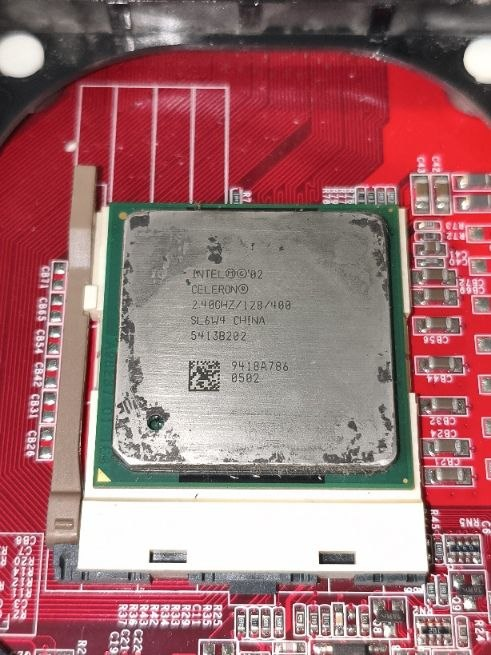
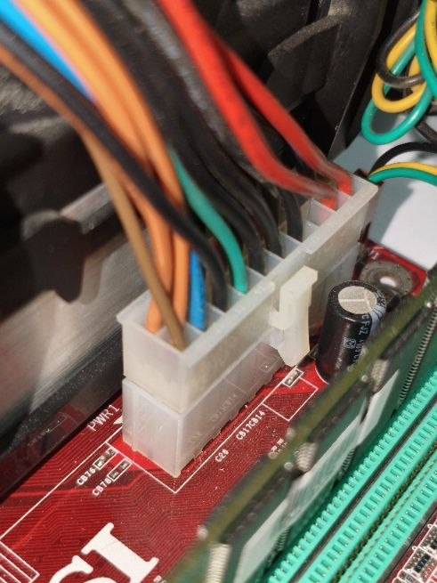
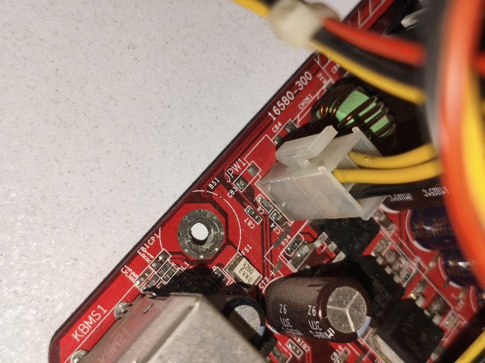
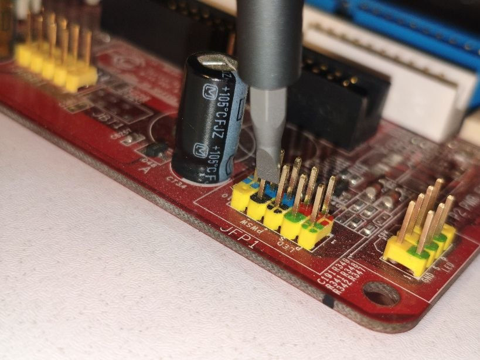
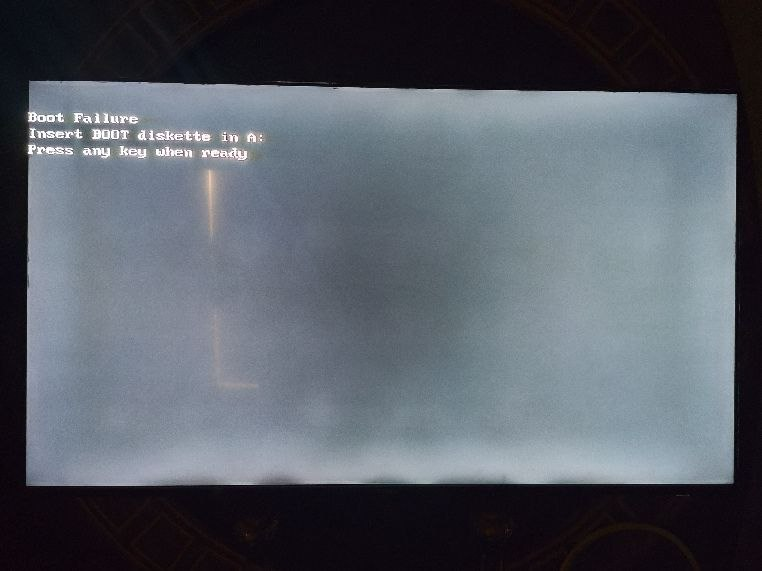
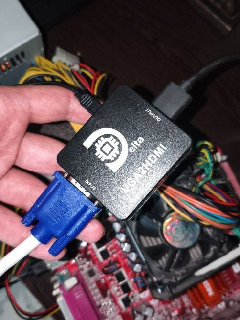

making a crappy theft-detector via an old motherbord

nephew story
cpu: intel-celeron 2.40ghz/128/400 + new arctic mx-4 thermal-paste (for chipset as well)

ram: kingston 512mbpower: 220v ac to 300w pc cable main 20pin + cpu 4pin


turning it on via short-circuting pwsw in jfp1

making sure it boots even without an os

using a vga cable + vga to hdmi
install linux on a 32gb micro sd-card as the main storage using a caed reader